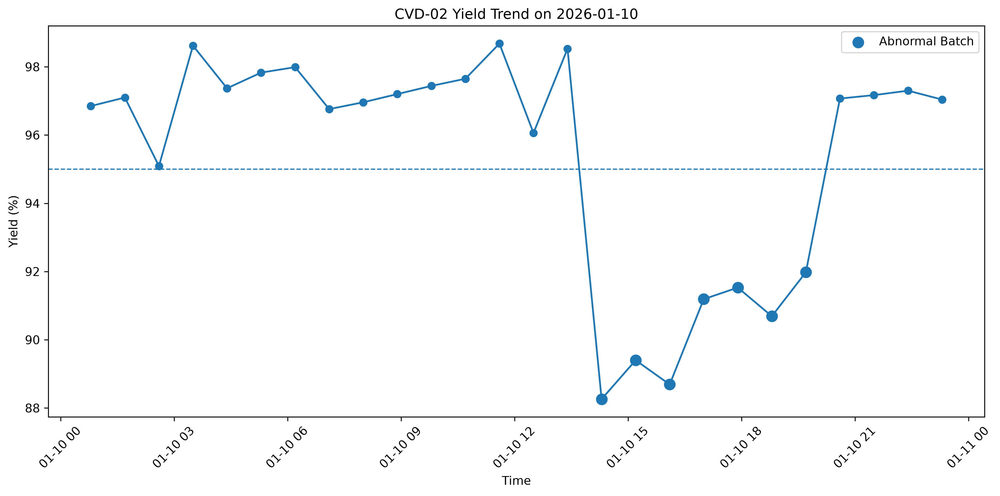

Yield Analysis

PurposeDetect the time window in which batch yield falls below the monitoring threshold.
Engineering InterpretationSeven of 26 CVD-02 batches are below 95%. Their timing directs the parameter review; yield alone does not identify a root cause.